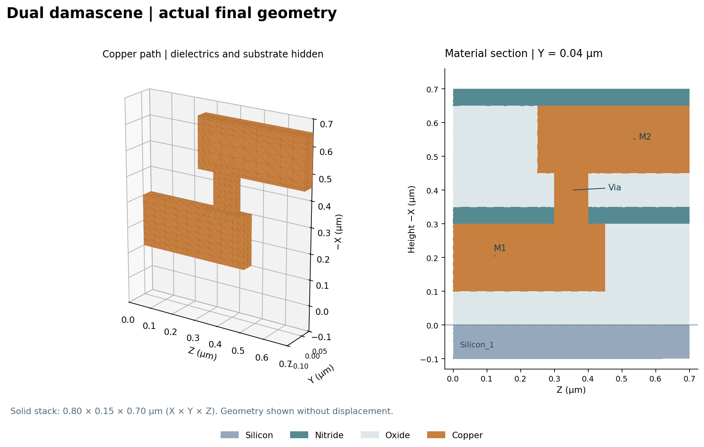
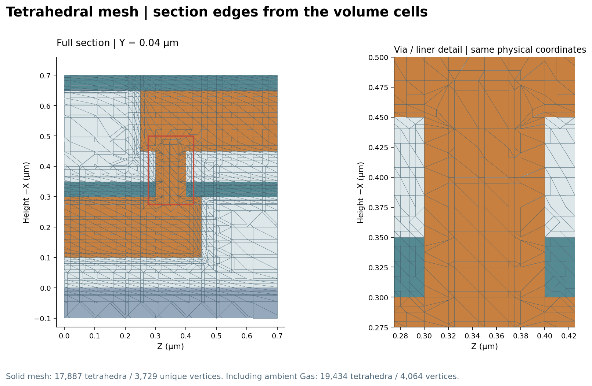
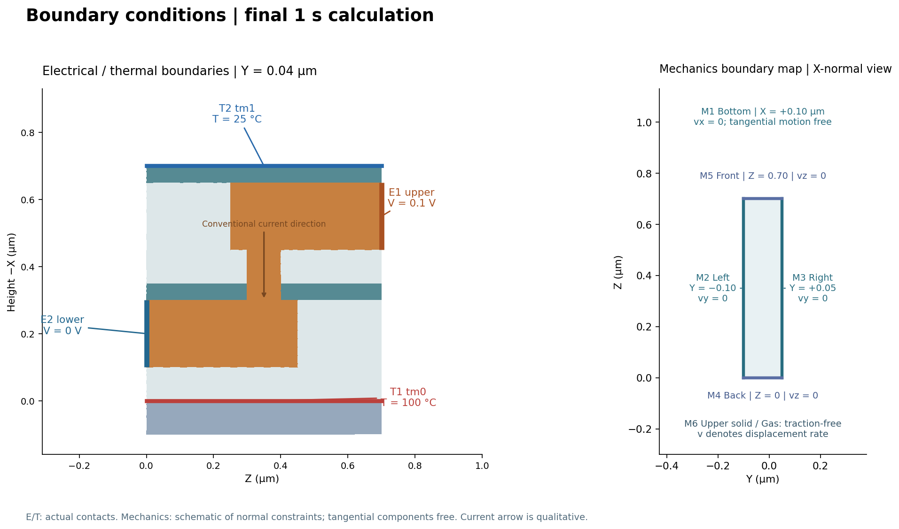
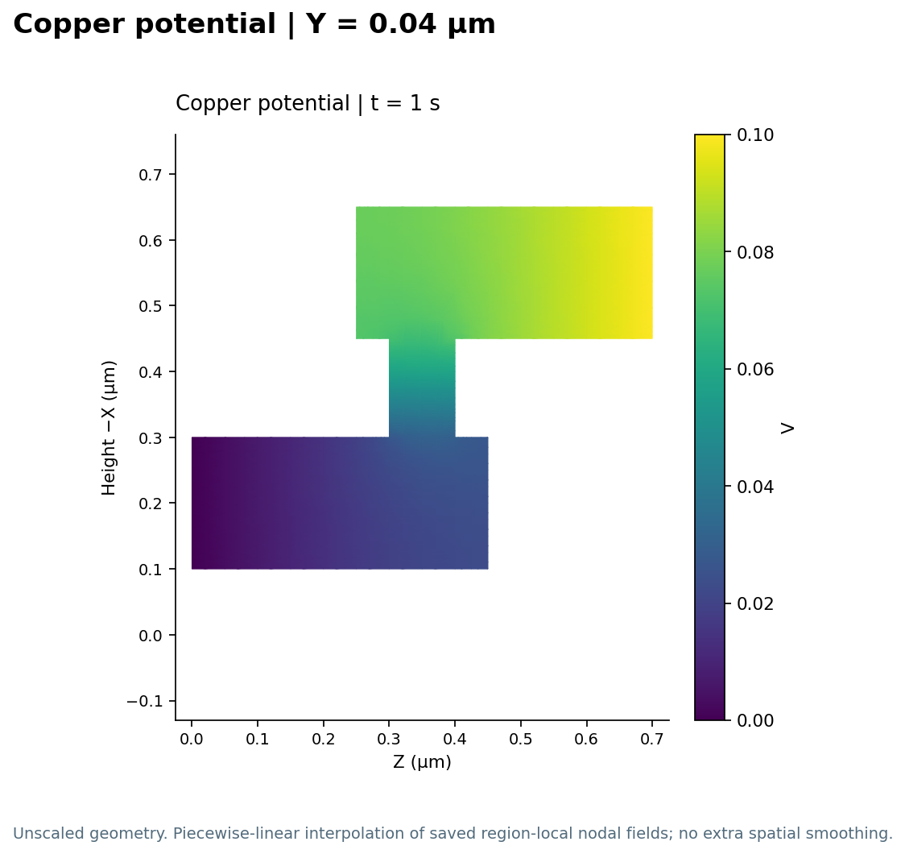
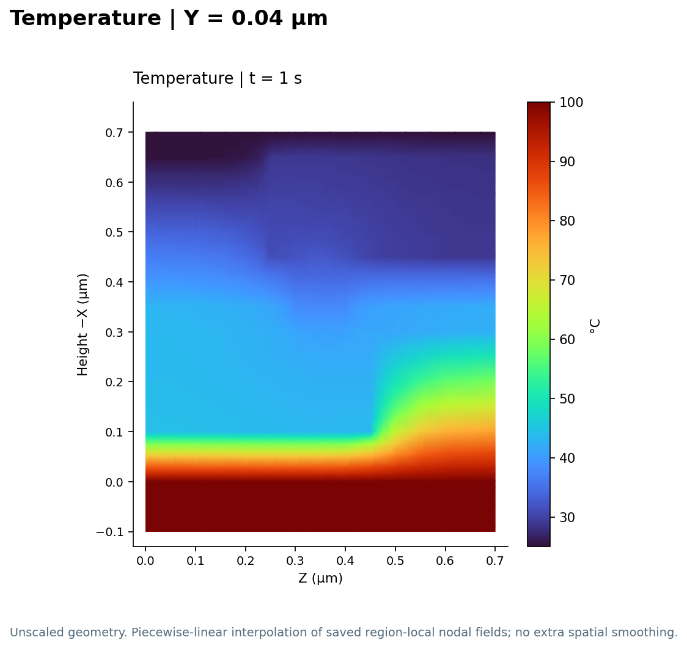
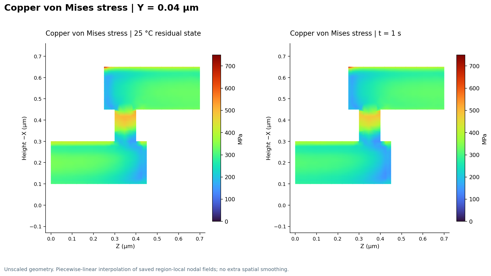
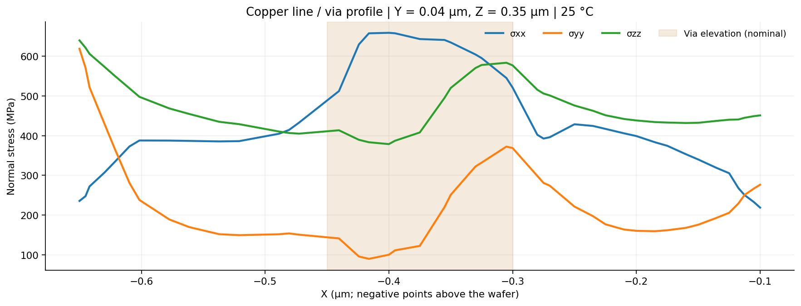

- Status
- Matched
- Mode
mode mechanics; mode mechanics current thermal
Damascene
Example-Three-Dimensional Damascene Structure
SIMULATION CASE REPORT
How does a copper line–via–line connection inherit stress from fabrication, and how does that stress change under electrical bias and a temperature gradient? This example follows the structure from deposition and etching through cooldown to a three-field calculation.
0.80 μmSolid stack thickness · X
0.10 μmNominal via opening · Z
250 → 25°CDeposition temperature → cooldown
17,887Tetrahedra in the solid materials
BackgroundGeometry & processInteractive modelMeshStress historyBoundary conditionsElectrical analysisThermal analysisMechanical responseNumericsOther featuresGT-A / converter
Background · stress in a dual-damascene interconnect
The device is a three-dimensional copper connection between two metal levels, embedded in oxide with nitride layers above a silicon substrate. Its engineering concern is residual and thermomechanical stress: copper and the surrounding materials cannot freely expand or contract independently, especially around the via and line corners.
Source: the Sentaurus Interconnect training example “Example—Three-Dimensional Damascene Structure”, from Applications_Library/GettingStarted/sinterconnect/DualDamascene. The retained working decks use the example’s three-stage process, cooldown and operating calculation; the report introduces no changes to its physical setup.
Geometry grows through the fabrication sequence
The solid domain spans 0.80 × 0.15 × 0.70 μm in X × Y × Z. X is the wafer-depth direction; deposited material extends toward negative X. The figures therefore use height −X. Two nominally 0.20 μm thick copper lines are joined through a via opening 0.10 μm long in Z. The modeled via occupies Y = 0.025–0.050 μm within the truncated simulation window.

1 · Lower line
Deposit oxide → pattern and etch the M1 trench → fill copper → strip resist → add a nitride cap.
2 · Via
Deposit oxide → pattern the via → etch oxide and nitride → fill copper → strip resist → fill oxide.
3 · Upper line
Pattern and etch the M2 trench → fill copper → strip resist → add the final nitride cap.
This sequence changes the geometry and its stress state. Oxide, nitride and copper deposition/fill steps specify 250°C; the M1 and via etches specify 25°C, while the upper-line oxide etch specifies 0°C. After construction, cooldown and the final field calculation use the same geometry and mesh. The sequence above is a process schematic; the geometry image shows the completed structure.
Idealization: mask-defined straight walls, ideal material interfaces and uniform deposited layers. The model contains copper, oxide, nitride and silicon; it does not resolve copper grains, surface roughness or a separate metal barrier/liner, and it does not simulate CMP.
Explore the model in 3D
Rotate the structure, hide surrounding materials or move a Y section through the via. Switch between fabrication, cooldown and the final 1 s state to explore the copper stress and temperature fields. Electrical potential is available for the final state.
Loading the interactive model…
Mesh · resolve the metal and material interfaces
| Control | Setting |
|---|---|
| Mesher | SnMesh controls; four-vertex tetrahedral volume topology. |
| Interface sizing | min.normal.size = 0.020 μm; max.lateral.size = 0.100 μm; normal.growth.ratio.3d = 2.0. |
| Local refinement | Active box: 100 nm in X, Y and Z. Copper: 50 nm in each direction. Interface refinement for Copper, Nitride and Oxide. |
| Solid mesh | 17,887 tetrahedra and 3,729 unique vertices. |
| Full mesh including Gas | 19,434 tetrahedra and 4,064 unique geometric vertices. |

Physics · why fabrication history matters
The main mechanism is thermal mismatch acting on a structure with process history. Deposition adds material; etching removes material and releases constraints. Both operations redistribute stress. With StressHistory = 1 and EtchDepoRelax = 1, that accumulated state is retained when the completed stack is cooled to 25°C using mode mechanics.
Δεmismatch ≈ (αCu − αsurrounding) ΔT
Here α is the thermal-expansion coefficient. Copper and the surrounding solids would change size by different amounts during cooling; their bonded interfaces enforce compatible motion and generate stress. The line–via transitions concentrate this response. Displacement is the mechanical unknown, while stress in the copper is the main quantity of interest.
The 25°C calculation is elastic because no duration is prescribed. The final calculation enables mode mechanics current thermal for 1 s and starts from this residual state. Oxide and nitride have viscoelastic behavior enabled, so the final response can also depend on time; the change in stress is not attributable to temperature alone.
Boundary conditions · electrical bias and a thermal gradient
Four named contacts select the electrical and thermal boundaries. These are named regions for applying conditions, rather than mechanical contact pairs.

| ID / entity | Location (μm) | Condition |
|---|---|---|
| E1 · upper · Copper | Z = 0.70; X = −0.65…−0.45; Y = 0…0.05 | V = 0.10 V |
| E2 · lower · Copper | Z = 0; X = −0.30…−0.10; Y = 0…0.05 | V = 0 V · electrical reference |
| T1 · tm0 · Silicon | X = 0; full Y–Z window | T = 100°C |
| T2 · tm1 · Nitride | X = −0.70; full Y–Z window | T = 25°C |
| M1 · Bottom | X = +0.10 | Default zero normal displacement rate, vx = 0. |
| M2/M3 · Left / Right | Y = −0.10 / +0.05 | Default vy = 0. |
| M4/M5 · Back / Front | Z = 0 / 0.70 | Default vz = 0. |
| M6 · upper solid surface | Solid / Gas interface | Traction-free. No external mechanical force is added. |
Electrical analysis · current crosses the via
The 0.10 V difference drives conduction from the upper line through the narrow via into the lower line. Potential V is the electrical unknown; the current density follows J = −σe∇V, where σe is electrical conductivity. The continuous potential drop identifies the connected copper path.

Thermal analysis · heat flows from substrate to cap
The silicon contact at 100°C and nitride cap at 25°C establish the temperature field. Heat conduction follows q = −κ∇T, where κ is thermal conductivity. The heat equation in this calculation has no heat-storage term, so this is a steady conduction field accompanying the time-dependent mechanics calculation.
Joule heating is zero in this result. The temperature distribution is driven by the prescribed thermal boundaries; it does not demonstrate current-induced self-heating. Temperature feeds the mechanical response through thermal expansion.

Mechanical response · residual stress remains dominant
Explore copper stress in the interactive 3D model ↑

| State | Copper temperature | Peak copper von Mises stress |
|---|---|---|
| Completed process | 250°C | 70.8 MPa |
| After elastic cooldown | 25°C | 721.5 MPa |
| Final field calculation · 1 s | 28.0–44.3°C | 709.8 MPa |
These peaks are taken over all saved copper nodes, rather than only the displayed section. Cooling creates a much larger stress change than the subsequent operating calculation. In both later states the copper peak occurs at the upper-line edge, near (X, Y, Z) = (−0.65, 0.05, 0.25) μm.
The via profile below separates the three normal-stress components after cooldown. It helps reveal the multiaxial stress state that a single equivalent-stress field cannot describe.

Sharp, ideal corners can produce mesh-sensitive stress peaks. The values describe this mesh and material model; a copper failure or reliability judgment would require an appropriate criterion and a mesh-sensitivity study.
Numerics · preserve the state between stages
The process stage enables stress history and etch/deposition relaxation before geometry construction. Cooldown imports that state for an elastic solve. The final stage imports the cooled state, applies the four contacts and advances to 1 s in 14 steps, starting at 10−4 s. The decks do not prescribe special convergence tolerances or a parameter-sweep comparison.
Other features used in this case
- Stress history carries fabrication-induced stress into cooldown and the subsequent field calculation.
- Etch stress rebalancing and Deposition stress rebalancing update equilibrium as material is removed or added.
- Field visualization includes a copper-only stress cut through the via, using
SetPlxListandWritePlxto extract the three normal components.
GT-A benchmark and si_converter
GT-A numerical benchmarking has not been completed for this case. The current si_converter does not yet support conversion of the complete process-history and joint mechanics/current/thermal workflow; this case is not fully supported.